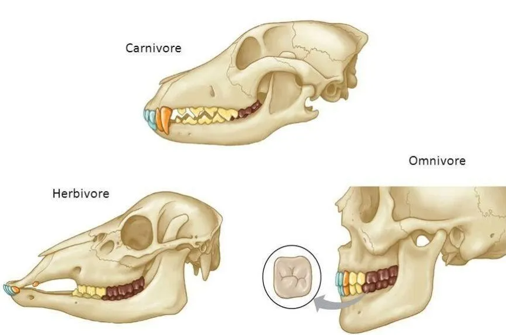

The Herbivore Intake
Action: Create an "Intake Funnel" that accepts only items typical of an herbivorous diet and keeps track of accepted vs. jammed inputs.
Mechanical Requirement: Use three distinct objects as "fuel" (e.g., a small wooden bead for nuts, a piece of green felt for leaves, and a marble for berries). The funnel must be designed to jam or reject "carnivorous" items like eggshells or plastic insects; the simulation records how many items pass or jam.

Drag items into the funnel. Herbivore food should pass through a visual digestive pathway; items inappropriate for an herbivore will be rejected or jam the system, with a short animation illustrating the process.
Nut
Leaf
Berry
Twig
Grass
Insect
Eggshell
Meat
Water
Rock
Drop here
mouth → esophagus → stomach
Accepted: 0 | Jammed: 0